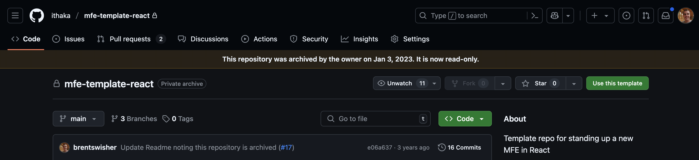
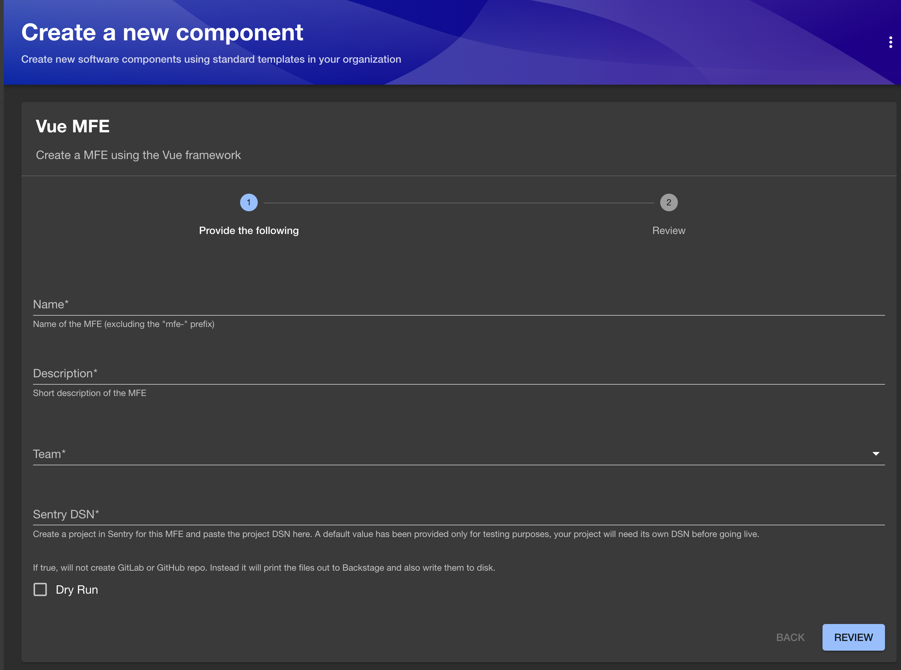
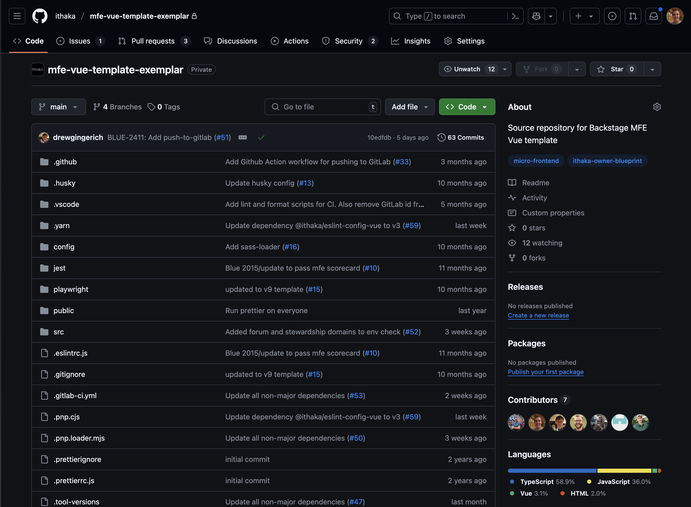
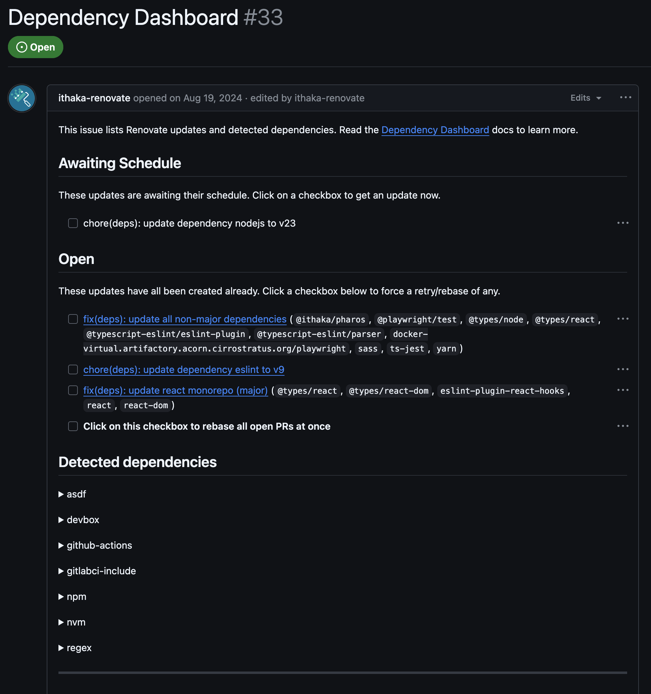
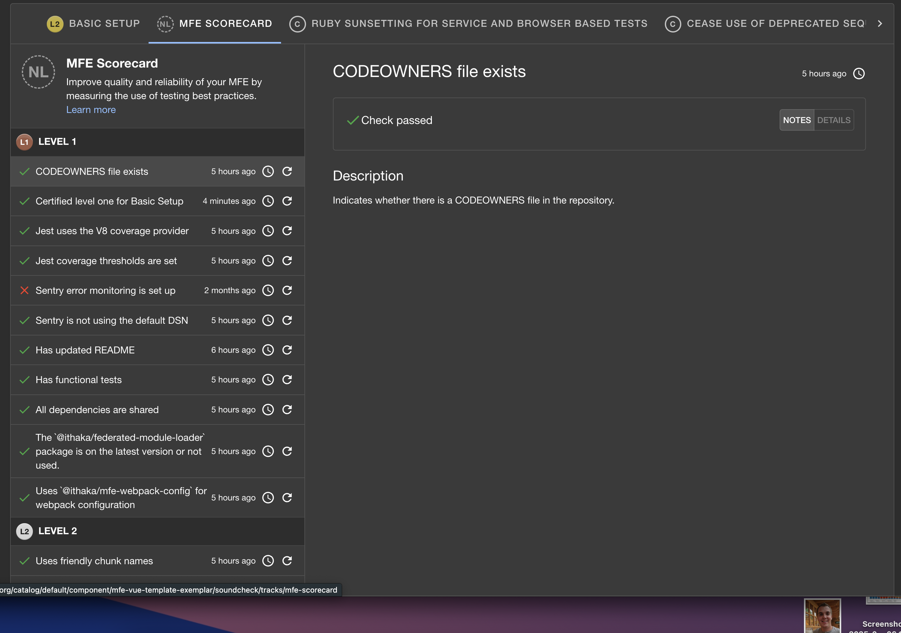
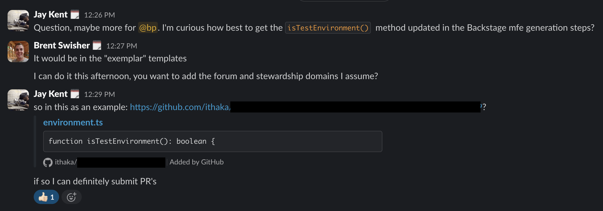

Exemplar-y
Software Templates
Brent Swisher
BackstageCon 2025
We are a nonprofit with a mission to improve access to knowledge and education for people around the world.
Micro-frontends (MFEs)

Micro-frontends (MFEs)
GitHub Repository Templates

## Usage
- Create a copy of this template repository and
name it mfe-<your MFE name with hyphens>.
- Clone your new repository.
- Install the dependencies using yarn install.
- Search for all instances of the word TODO
and follow the instructions.
- Run the tests to ensure everything is working as expected.
Backstage Templates
What's the problem?
"name": "${{values.component_id}}",
local: /skeleton (main)]$ yarn
yarn install v1.22.22
error package.json: Name contains illegal characters
info Visit https://yarnpkg.com/en/docs/cli/install for documentation about this command.
yarn build
ERROR in [entry] [initial] remoteEntry.js
Library name base (mfe${{ values.nameKebabCase }}) must be a
valid identifier when using a var declaring library type.
Updating Templates
Run Backstage Locally
Run Template
Open "mfe-brent-update"
Make Changes
Test Changes
Copy files back to the template
Fix templated content
Go back to Backstage
Run Template Again
Verify your changes
Make sure your name isn't still in it
Open PR and merge
😅
It's pretty hard to contributeSo, what to do...
What if a template...
🤔
...wasn't a template at all
Exemplar Templates
How's it work?
The custom action
const filePaths = getAllTemplateFiles(ctx.workspacePath);
filePaths.forEach((filePath) => {
const fileContent = fs.readFileSync(filePath).toString();
let replacementContent = fileContent;
let replacementFileName = filePath;
for (const replacement in stringReplacements) {
replacementFileName = replacementFileName.replaceAll(
stringReplacements[replacement].searchTerm,
stringReplacements[replacement].replacementTerm,
);
replacementContent = replacementContent.replaceAll(
stringReplacements[replacement].searchTerm,
stringReplacements[replacement].replacementTerm,
);
}
https://github.com/ithaka/backstage-template-string-replace-action
Pull in the Exemplar
- id: fetch-template-repository
name: Fetch Base
action: fetch:template
input:
url: https://github.com/ithaka/vue-exemplar/tree/main
Update the file content
- id: replace-template-strings
name: Replace template string values
action: ithaka:template-string-replace
input:
replacementStrings:
name-kebab-case:
searchTerm: vue-template-exemplar
replacementTerm: ${{ name.kebabCase }}
nameCamelCase:
searchTerm: vueTemplateExemplar
replacementTerm: ${{ name.camelCase }}
owner:
searchTerm: replace-with-project-owner
replacementTerm: ${{ parameters.team.name }}
We can rename files too!
- id: replace-template-strings
name: Replace template string values
action: ithaka:template-string-replace
input:
replacementStrings:
# Replace templates files
catalogFile:
searchTerm: project-catalog-info
replacementTerm: catalog-info
READMEFile:
searchTerm: project-README
replacementTerm: README
Updating Templates is Easy!
Make the change
Test the change
Open PR and merge
What does it enable us to do?
Better Tooling
Renovate
Soundcheck
Better Collaboration
Faster Onboarding
Community Contributions
Impact at ITHAKA
🔥 Merge 18x more PRs in exemplars
🕓 Each template use saves ~4 hours